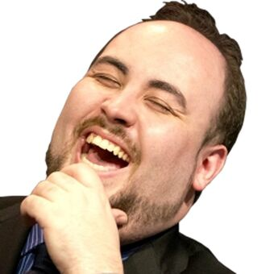
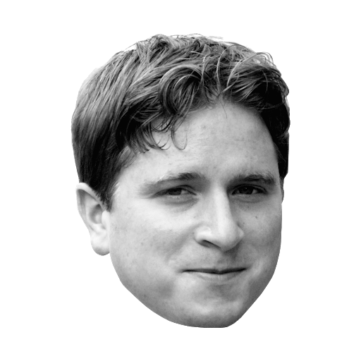
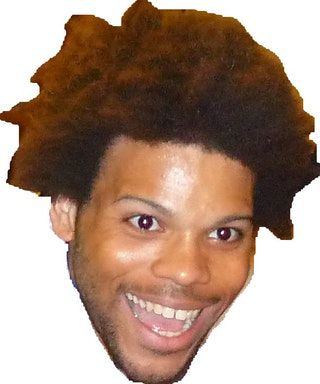
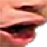
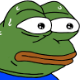
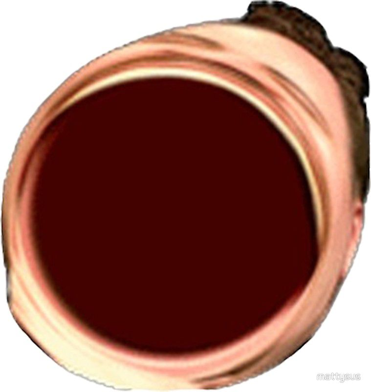
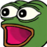
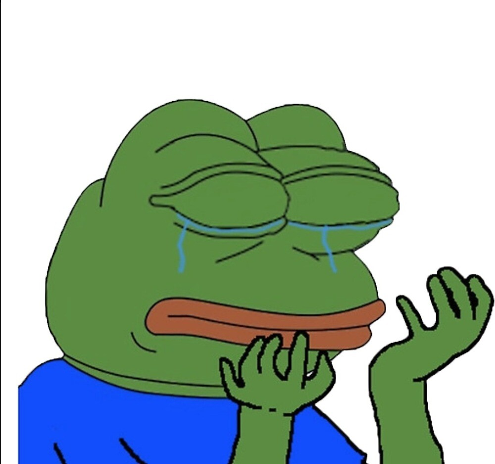
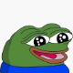

| Emote (Text) | Meaning | Emote (Image) |
|---|---|---|
| LUL | Used to express laughter. Features the face of Twitch streamer TotalBiscuit. |  |
| PogChamp | Used to express shock, surprise, or excitement. Features the face of Youtuber Gootecks. | |
| weirdChamp | Used to express dissapointment. Features the face of Youtuber Gootecks. | |
| Kappa | Not commonly used in Ludwig's chat. |  |
| TriHard |  |
| Emote (Text) | Meaning | Emote (Image) |
|---|---|---|
| Pog | Used to express shock, surprise, or excitement. Zoomed in version (just the mouth) of Pogchamp. |  |
| monkaS | Used to express nervousness or fear. Features meme icon Pepe the Frog. |  |
| OMEGALUL | Used to express laughter. Distorted version of LUL. |  |
| POGGERS | Used to express shock, surprise, or excitement. Features meme icon Pepe the Frog. |  |
| PepeHands | Used to express sadness. Features meme icon Pepe the Frog. |  |
| peepoHappy | Used to express innocence and happiness. Features meme icon Pepe the Frog. Often used in conjunction with Twitch's edit feature as widepeepoHappy, making it a horizontally stretched version. |  |
| Emote (Text) | Meaning | Emote (Image) |
|---|---|---|
| ludwig7 | Used to express respect. Features picture of Ludwig saluting. | |
| ludwigDoc | ||
| ludwigU | Used to express shock, surprise, or excitement. Features Ludwig immitating PogChamp. | |
| ludwigWC | Used to dissapointment. Features Ludwig immitating weirdChamp. | |